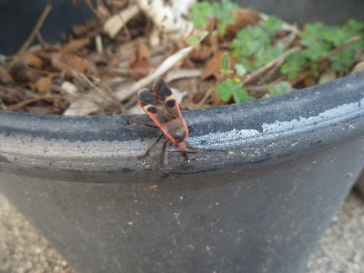
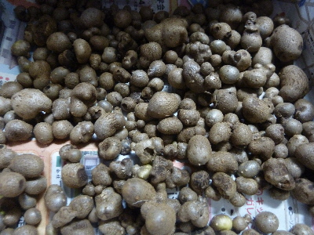
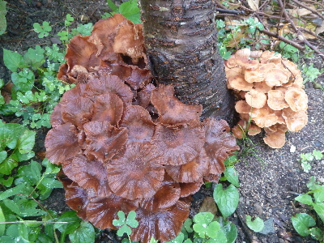
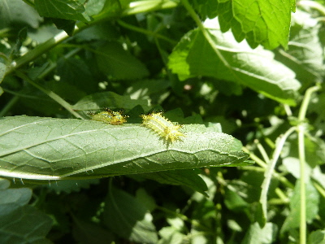

遊びで植物を育てよう
2017/09/24
ちょっと派手なカメムシがいました。
このカメムシも臭いのかな？

ちょっと色があると、カメムシっぽくないですね。
ネットで調べてみました。
オオホシカメムシって名前かな？
ミカンの害虫みたいですね。嫌なヤツなんだ。
【9月TOP】
【日記TOP】
【園芸TOP】
2017/09/16
台風が来るそうなのでムカゴを収穫しました。
台風来たらムカゴが落ちるかなと思って、収獲しました。

収獲する時期が遅かったようで、地面にムカゴがゴロゴロ落ちてました。
落ちたのは来年芽が出て、またムカゴが出来ればいいかな。
来年は沢山収穫できるように、ちゃんと畑に植えて育てようかな。
【9月TOP】
【日記TOP】
【園芸TOP】
2017/09/09
巨大なキノコがあちこち生えてて気持ち悪い。
大きいキノコが生えてました。

4つ見つけました。

同じ種類の成長違いでしょうか？
なんて名前でしょうね。
とりあえず放置かな。そのうち消えるでしょう。
【9月TOP】
【日記TOP】
【園芸TOP】
2017/09/09
イラガ発生中なので廃棄です。
レモンバームにイラガがいました。

毒が怖いので、もうレモンバームは触れないですね。
今年はもう収穫しないつもりだったので、まあいいかな。
【9月TOP】
【日記TOP】
【園芸TOP】
過去の日記
【2024年9月の日記】
【2023年9月の日記】
【2022年9月の日記】
【2021年9月の日記】
【2020年9月の日記】
【2019年9月の日記】
【2018年9月の日記】
【2017年9月の日記】
【2016年9月の日記】
【2015年9月の日記】
【2014年9月の日記】
【2013年9月の日記】
【2012年9月の日記】
【9月TOP】
【日記TOP】
【園芸TOP】
畑仕事じゃないよ。
【おいしいものを食べよう。】【たくさん寝よう。】
【ソロ活をしよう!】【季節感のあることをしよう。】【動画視聴はほどほどに。】【当サイトの全てのコンテンツは無断転載禁止です。】